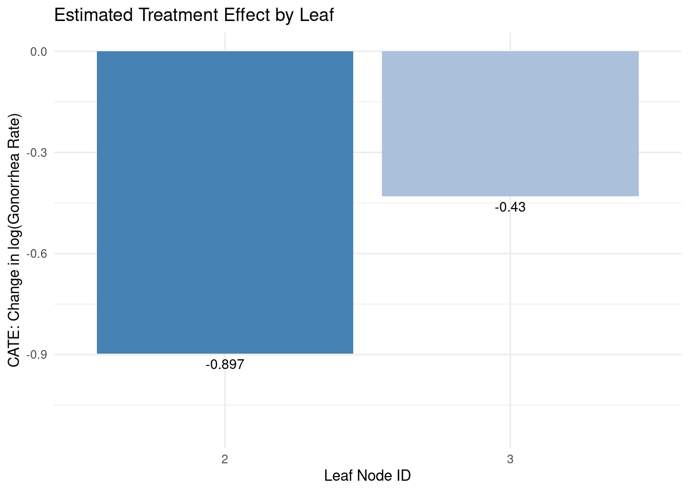
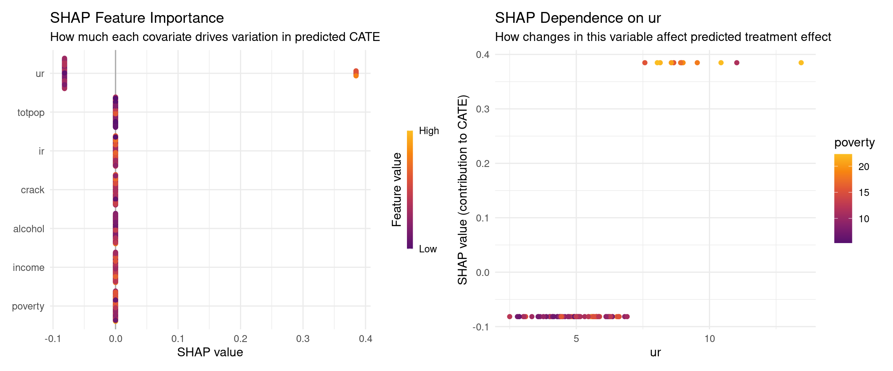

Code
packages <- c(
"tidyverse",
"RCausalML",
"rpart.plot",
"causaldata",
"shapviz",
"kernelshap"
)

Causal trees are a powerful tool for uncovering heterogeneous treatment effects in observational data. In this tutorial, we’ll build a single causal tree using the RCausalML package in R, which implements the honest estimation approach proposed by Athey and Imbens (2016) [[7]]. We use a synthetic and a real-world dataset with known treatment effect heterogeneity to illustrate the method. By the end of this tutorial, you’ll understand how to fit a causal tree, interpret its structure, and validate the estimated treatment effects.
A Causal Tree (CT) is a machine learning method introduced by Athey & Imbens (2016) for estimating Heterogeneous Treatment Effects (HTE). Rather than asking “does a treatment work on average?”, it asks:
“For whom does it work, and by how much?”
In a randomized experiment, the Average Treatment Effect (ATE) tells you the mean outcome difference between treated and control groups — but individuals respond differently. For example:
The Causal Tree finds these subgroup differences automatically by partitioning the covariate space into regions with meaningfully different treatment effects, called Conditional Average Treatment Effects (CATEs).
| Standard decision tree | Causal tree | |
|---|---|---|
| Splits on | Variance in outcome \(Y\) | Variance in treatment effect \(\tau\) |
| Estimation | In-sample (same data) | Honest (held-out sample) |
| Output | Predicted \(\hat{Y}\) | Estimated CATE \(\pm\) confidence interval |
| Goal | Prediction | Causal inference |
The algorithm follows four steps, each building on the last.
Standard regression trees use the same data to find splits and estimate values in leaves — this leads to overfitting and biased estimates. The Causal Tree avoids this with honesty:
At each node, the algorithm searches over all features and split points. Instead of minimizing MSE of \(Y\), it maximizes the variance in treatment effects between child nodes:
\[\text{Criterion} = \hat{\tau}^2_{\text{left}} \cdot n_{\text{left}} + \hat{\tau}^2_{\text{right}} \cdot n_{\text{right}}\]
This ensures that chosen splits create subgroups that genuinely differ in how they respond to treatment.
Within each terminal leaf, the CATE is estimated as a simple difference-in-means using the estimation sample only:
\[\widehat{\text{CATE}}_\ell = \bar{Y}^{(1)}_\ell - \bar{Y}^{(0)}_\ell = \frac{1}{n^{(1)}_\ell}\sum_{i \in \ell, W_i=1} Y_i \;-\; \frac{1}{n^{(0)}_\ell}\sum_{i \in \ell, W_i=0} Y_i\]
Because of honesty, these estimates are unbiased and asymptotically normal — so valid confidence intervals can be constructed.
In practice, the roles of splitting and estimation samples are swapped and results combined (analogous to cross-validation), so all data contributes to both steps without sacrificing honesty.
For a Causal Tree to produce valid causal estimates, three assumptions must hold:
1. Unconfoundedness — Conditional on covariates \(X\), treatment assignment is as good as random: \[W_i \perp \!\!\! \perp (Y_i(0), Y_i(1)) \mid X_i\] This holds by design in randomized experiments and must be argued for in observational studies.
2. Overlap — Both treated and control units must exist within every leaf: \[0 < P(W_i = 1 \mid X_i) < 1 \quad \forall \, X_i\] The minimum leaf size hyperparameter enforces this in practice.
3. SUTVA — Stable Unit Treatment Value Assumption: one unit’s treatment does not affect another’s outcome (no interference).
| Regression tree | Causal tree | |
|---|---|---|
| Splits on | Variance in Y | Variance in treatment effects |
| Estimation | In-sample | Honest (held-out sample) |
| Output | Predicted Y | CATE ± confidence interval |
| Goal | Prediction | Causal inference |
The single causal tree is interpretable and produces valid statistical tests, but it can have high variance (a slightly different sample gives a quite different tree). The natural extension is the Causal Forest (Wager & Athey, 2018), which averages many honest causal trees — much like random forests improve on single decision trees — to get lower variance CATE estimates. Libraries like grf in R and EconML in Python implement both.
A single causal tree is a decision tree that partitions data to identify subgroups with different treatment effects.
| Standard Decision Tree | Causal Tree |
|---|---|
| Predicts outcome \(Y\) | Estimates treatment effect \(\tau\) |
| Splits to minimize MSE of \(Y\) | Splits to maximize difference in \(\tau\) between children |
| Output: Predicted \(Y\) | Output: Estimated CATE (Conditional Average Treatment Effect) |
Key Innovation: Honest Estimation
Small samples (< 200 observations per subgroup): Estimates will be unstable
High-dimensional covariates (p > n): Use causal forests or regularization first
Primary goal is prediction accuracy: Forests outperform single trees
Weak overlap / poor common support: If propensity of repeal is near 0 or 1 in some states, consider matching first
High variance: Estimates can be noisy, especially with small samples or many covariatesInstability: Small changes in data can lead to different splitsBias-variance tradeoff: Honest estimation reduces bias but can increase varianceInterpretabilitycan be challenging if tree is large or has many splitsPruning is crucial to avoid overfitting, but optimal pruning can be difficult to determineDoes not leverage information across similar subgroups (unlike forests), so may miss subtle patternsRequires careful tuning of parameters (minsize, cp, maxdepth) to balance fit and generalizationThis tutorial uses the `RCausalML`` package for honest causal trees. We’ll cover:
abortion dataset from causaldata
Each section includes:
causal_tree()
Following R packages are required to run this notebook. If any of these packages are not installed, you can install them using the code below:
tidyverse, RCausalML, rpart.plot, causaldata, shapviz, kernelshap
packages <- c(
"tidyverse",
"RCausalML",
"rpart.plot",
"causaldata",
"shapviz",
"kernelshap"
)# Install missing packages
# new_packages <- packages[!(packages %in% installed.packages()[, "Package"])]
# if (length(new_packages)) install.packages(new_packages)# Load packages with suppressed messages
invisible(lapply(packages, function(pkg) {
suppressPackageStartupMessages(library(pkg, character.only = TRUE))
}))# Check loaded packages
cat("Successfully loaded packages:\n")Successfully loaded packages: [1] "package:kernelshap" "package:shapviz" "package:causaldata"
[4] "package:rpart.plot" "package:rpart" "package:RCausalML"
[7] "package:lubridate" "package:forcats" "package:stringr"
[10] "package:dplyr" "package:purrr" "package:readr"
[13] "package:tidyr" "package:tibble" "package:ggplot2"
[16] "package:tidyverse" "package:stats" "package:graphics"
[19] "package:grDevices" "package:utils" "package:datasets"
[22] "package:methods" "package:base" We use simulated data from synthetic_data() (see R/synthetic_data.R) to illustrate fitting a causal tree, estimating treatment effects on a test set, and visualizing results. The data has a known heterogeneous treatment effect structure, which is useful for validation.
Generate data with synthetic_data() from RCausalML: nonlinear baseline, heterogeneous treatment effects, and propensity that depends on covariates.
set.seed(42)
dat <- synthetic_data(mode = 2, n = 2000, p = 12, sigma = 2)
# Extract components
y_sim <- dat$y
X_sim <- dat$X
w_sim <- dat$w
tau_sim <- dat$tau # true CATE (for evaluation)Create a data frame with outcome and treatment for the causal tree (use a subset of columns as covariates for clarity):
Split into training (80%) and test (20%) for honest evaluation of CATE estimates.
Fit an honest causal tree using causal_tree() from RCausalML (see R/causalTree.R). Use the training sample only for structure and estimation splits.
if (!exists("na.causalTree")) na.causalTree <- function(object, ...) object
covar_names_sim <- setdiff(colnames(df_train), c("outcome", "treatment", "tau_true"))
formula_sim <- as.formula(paste("outcome ~", paste(covar_names_sim, collapse = " + ")))
# Honest split: half for tree structure, half for leaf estimation
n_obs <- nrow(df_train)
n_tree <- max(1L, floor(n_obs / 2))
tree_idx <- sample(seq_len(n_obs), size = n_tree, replace = FALSE)
est_idx_sim <- setdiff(seq_len(n_obs), tree_idx)
ct_sim <- causal_tree(
formula = formula_sim,
data = df_train,
treatment = as.vector(df_train$treatment),
honest = TRUE,
est_idx = est_idx_sim,
split.Rule = "CT",
cv.option = "CT",
split.Bucket = FALSE,
minsize = 20L,
cp = 0,
xval = 10L,
maxdepth = 5
)
# Prune by minimum CV error
cpt_sim <- ct_sim$cptable
opcp_sim <- if (nrow(cpt_sim) > 1) cpt_sim[, 1][which.min(cpt_sim[, 4])] else 0.01
ct_sim <- prune(ct_sim, cp = max(opcp_sim, 0.005))
summary(ct_sim)Call:
causal_tree(formula = formula_sim, data = df_train, treatment = as.vector(df_train$treatment),
honest = TRUE, est_idx = est_idx_sim, split.Rule = "CT",
cv.option = "CT", minsize = 20, split.Bucket = FALSE, xval = 10,
cp = 0, maxdepth = 5)
n= 800
CP nsplit rel error xerror xstd
1 0.005 0 1 1 1.716693e-05
Node number 1: 800 observations
causal effect=1.317211, error=63448.09 Predict CATE for the test set and compare to the true (simulated) treatment effect.
Test set CATE summary: Predicted CATE: mean = 1.3172 , sd = 0 True CATE: mean = 0.8807 , sd = 1.0853 # Correlation (on complete cases)
valid <- complete.cases(df_test$cate_pred, df_test$tau_true)
if (sum(valid) > 1) {
cat(" Correlation (pred vs true):", round(cor(df_test$cate_pred[valid], df_test$tau_true[valid]), 4), "\n")
} Correlation (pred vs true): NA We use the abortion dataset from the causaldata package, which examines the effect of abortion legalization (early repeal) on gonorrhea incidence among 15–19 year olds as a proxy for risky sexual behavior. By the end of this tutorial, you’ll understand how to use causal trees to identify subgroups where the policy had stronger (or weaker) effects, and how to validate your findings.
R package causaldata provides a collection of datasets for causal inference. We integrate {causaldata} with {RCuasalML} to easily load datasets. In this tutorial, we use will use abortion dataset, which contains state-year observations on gonorrhea rates among 15–19 year olds, with a binary indicator for early repeal of abortion prohibition. This dataset is commonly used to study the effects of abortion legalization on risky sexual behavior among teenagers, proxied by gonorrhea rates.
This dataset is commonly used to study the causal effects of abortion legalization policies (specifically, early repeal of abortion prohibitions in certain U.S. states) on risky sexual behavior among teenagers. Risky behavior is proxied by the incidence of gonorrhea (a sexually transmitted infection) among 15–19 year olds. The idea is that access to abortion might influence sexual decision-making or risk-taking behavior in this age group.
Here are the most important columns (based on the package documentation):
# causaldata integration
list_causaldata_datasets()The outcome variable is typically lnr (logged gonorrhea rate per 100,000 population among 15–19 year olds), which measures the logged incidence of gonorrhea as a proxy for risky sexual behavior.
# Load abortion dataset (use $data for the raw dataframe; load_causaldata returns list with X, w, y, data, citation)
abortion <- load_causaldata("abortion")$data
# Quick look
head(abortion)str(abortion)tibble [737 × 22] (S3: tbl_df/tbl/data.frame)
$ fip : num [1:737] 1 1 1 1 1 1 1 1 1 1 ...
..- attr(*, "label")= chr "FIPSCODE"
..- attr(*, "format.stata")= chr "%8.0g"
$ age : num [1:737] 15 15 15 15 15 15 15 15 15 15 ...
..- attr(*, "label")= chr "AGE"
..- attr(*, "format.stata")= chr "%9.0g"
$ race : num [1:737] 2 2 2 2 2 2 2 2 2 2 ...
..- attr(*, "label")= chr "w-1, b-2"
..- attr(*, "format.stata")= chr "%9.0g"
$ year : num [1:737] 1985 1986 1987 1988 1989 ...
..- attr(*, "label")= chr "YEAR"
..- attr(*, "format.stata")= chr "%8.0g"
$ sex : num [1:737] 2 2 2 2 2 2 2 2 2 2 ...
..- attr(*, "label")= chr "m-1, f-2"
..- attr(*, "format.stata")= chr "%9.0g"
$ totpop : num [1:737] 106187 106831 106496 105238 102956 ...
..- attr(*, "label")= chr "TOTPOP"
..- attr(*, "format.stata")= chr "%12.0g"
$ ir : num [1:737] 101 112 123 134 146 ...
..- attr(*, "label")= chr "Incarcerated Males per 100,000"
..- attr(*, "format.stata")= chr "%9.0g"
$ crack : num [1:737] 0.217 0.277 0.211 0.56 0.722 ...
..- attr(*, "label")= chr "Crack index"
..- attr(*, "format.stata")= chr "%9.0g"
$ alcohol: num [1:737] 1.9 1.9 1.89 1.89 1.87 ...
..- attr(*, "label")= chr "Alcohol consumption per capita"
..- attr(*, "format.stata")= chr "%9.0g"
$ income : num [1:737] 11566 12164 12826 13698 14865 ...
..- attr(*, "label")= chr "Real income per capita"
..- attr(*, "format.stata")= chr "%9.0g"
$ ur : num [1:737] 8.62 9.08 7.65 6.92 6.62 ...
..- attr(*, "label")= chr "State unemployment rate"
..- attr(*, "format.stata")= chr "%9.0g"
$ poverty: num [1:737] 20.6 23.8 21.3 19.3 18.9 ...
..- attr(*, "label")= chr "Poverty rate"
..- attr(*, "format.stata")= chr "%9.0g"
$ repeal : num [1:737] 0 0 0 0 0 0 0 0 0 0 ...
..- attr(*, "format.stata")= chr "%9.0g"
$ acc : num [1:737] 0.68 1.53 3.5 6.26 9.42 ...
..- attr(*, "label")= chr "AIDS mortality per 100,000 cumulative in t, t-1, t-2, t-3"
..- attr(*, "format.stata")= chr "%9.0g"
$ wht : num [1:737] 0 0 0 0 0 0 0 0 0 0 ...
..- attr(*, "label")= chr "White Indicator"
..- attr(*, "format.stata")= chr "%9.0g"
$ male : num [1:737] 0 0 0 0 0 0 0 0 0 0 ...
..- attr(*, "label")= chr "Male Indicator"
..- attr(*, "format.stata")= chr "%9.0g"
$ lnr : num [1:737] 8.78 8.76 8.66 8.72 8.69 ...
..- attr(*, "format.stata")= chr "%9.0g"
$ t : num [1:737] 1 2 3 4 5 6 7 8 9 10 ...
..- attr(*, "format.stata")= chr "%9.0g"
$ younger: num [1:737] 1 1 1 1 1 1 1 1 1 1 ...
..- attr(*, "format.stata")= chr "%9.0g"
$ fa : num [1:737] 1 1 1 1 1 1 1 1 1 1 ...
..- attr(*, "format.stata")= chr "%9.0g"
$ pi : num [1:737] 0 0 1 1 1 1 1 1 1 1 ...
..- attr(*, "format.stata")= chr "%9.0g"
$ bf15 : num [1:737] 1 1 1 1 1 1 1 1 1 1 ...
..- attr(*, "format.stata")= chr "%9.0g"summary(abortion$repeal) # Treatment balance Min. 1st Qu. Median Mean 3rd Qu. Max.
0.0000 0.0000 0.0000 0.1085 0.0000 1.0000 table(abortion$repeal, abortion$race) # Example crosstab
2
0 657
1 80# Visualize treatment assignment, outcome, and covariate distributions in a panel layout
library(gridExtra)
library(ggplot2)
# Treatment assignment barplot (as ggplot)
df_tab <- data.frame(group = factor(c("Control", "Treated"), levels = c("Control", "Treated")),
n = as.numeric(table(abortion$repeal)))
plt_treat <- ggplot(df_tab, aes(x = group, y = n, fill = group)) +
geom_bar(stat = "identity", width = 0.7) +
scale_fill_manual(values = c("skyblue", "tomato")) +
labs(title = "Treatment Group Sizes", x = "", y = "Number of Observations") +
theme_minimal() +
theme(legend.position = "none")
# Outcome by treatment boxplot (as ggplot)
plt_outcome <- ggplot(abortion, aes(x = factor(repeal, labels = c("Control", "Treated")), y = lnr, fill = factor(repeal))) +
geom_boxplot(alpha = 0.8) +
scale_fill_manual(values = c("skyblue", "tomato")) +
labs(title = "Logged Gonorrhea Rate by Treatment Group", x = "", y = "lnr (log gonorrhea rate)") +
theme_minimal() +
theme(legend.position = "none")
# Covariate boxplots
abortion$group <- factor(abortion$repeal, levels = c(0, 1), labels = c("Control", "Treated"))
feature_vars <- c("totpop", "income", "alcohol", "ir", "crack", "poverty")
covar_plots <- lapply(feature_vars, function(var) {
ggplot(abortion, aes_string(x = "group", y = var, fill = "group")) +
geom_boxplot(alpha = 0.8) +
theme_minimal() +
xlab("") +
ggtitle(paste("Distribution of", var, "by Treatment Group")) +
scale_fill_manual(values = c("skyblue", "tomato")) +
theme(legend.position = "none")
})
# Arrange plots in panels. We'll create a two-row panel: first row = assignment + outcome, next rows = covariates.
grid.arrange(
plt_treat, plt_outcome,
covar_plots[[1]], covar_plots[[2]], covar_plots[[3]],
covar_plots[[4]], covar_plots[[5]], covar_plots[[6]],
ncol = 2,
top = "Treatment, Outcome and Covariate Distributions by Group"
)
# Select relevant subset (focus on 15-19 year olds, complete cases)
abortion_clean <- abortion %>%
dplyr::filter(age >= 15 & age <= 19) %>%
na.omit()
# Define covariates (X), outcome (Y), treatment (W)
X <- abortion_clean[, c("age", "race", "sex", "totpop", "ir", "crack",
"alcohol", "income", "ur", "poverty")]
Y <- abortion_clean$lnr # Logged gonorrhea rate per 100,000 (continuous)
W <- abortion_clean$repeal # 1 = early repeal (treatment), 0 = otherwise
# Convert X to numeric matrix
X <- as.matrix(X)
colnames(X) <- c("age", "race", "sex", "totpop", "ir", "crack",
"alcohol", "income", "ur", "poverty")
# Remove near-zero variance columns (if any)
X <- X[, apply(X, 2, stats::var) > 1e-10, drop = FALSE]
cat("Covariates used:", colnames(X), "\n")Covariates used: totpop ir crack alcohol income ur poverty 80% training, 20% test.
set.seed(42)
train_prop <- 0.8
n <- nrow(abortion_clean)
train_idx <- sample(1:n, size = round(train_prop * n))
X_train <- X[train_idx, , drop = FALSE]
Y_train <- Y[train_idx]
W_train <- W[train_idx]
X_test <- X[-train_idx, , drop = FALSE]
Y_test <- Y[-train_idx]
W_test <- W[-train_idx]
cat("Training set size:", nrow(X_train), "\n")Training set size: 590 Test set size: 147 df <- as.data.frame(X_train)
df$outcome <- Y_train
df$treatment <- W_train
# Check treatment balance
table(df$treatment)
0 1
526 64 prop.table(table(df$treatment))
0 1
0.8915254 0.1084746 set.seed(2024)
# Honest splitting: Use half for structure, half for estimation (manual split for reproducibility)
n_obs <- nrow(df)
n_train <- max(1L, floor(n_obs / 2))
tree_idx <- sample(seq_len(n_obs), size = n_train, replace = FALSE)
est_idx <- setdiff(seq_len(n_obs), tree_idx)
cat("Honest mode:", length(tree_idx), "obs for tree structure,",
length(est_idx), "for estimation\n")Honest mode: 295 obs for tree structure, 295 for estimationcovar_names <- setdiff(colnames(df), c("outcome", "treatment"))
formula_ct <- as.formula(paste("outcome ~", paste(covar_names, collapse = " + ")))
# Ensure the 'na.causalTree' function is available in the environment.
# This is required by recent hte/cbhrt/causalTree forks. Provide an identity function if missing.
if (!exists("na.causalTree")) {
na.causalTree <- function(object, ...) object
}
ct_model <- causal_tree(
formula = formula_ct,
data = df,
treatment = as.vector(df$treatment),
honest = TRUE, # Honest mode enabled
est_idx = est_idx, # Use indices for estimation sample
split.Rule = "CT",
cv.option = "CT",
split.Bucket = FALSE,
minsize = 15L, # smaller leaves allow more splits with this dataset
cp = 0,
xval = 10L,
maxdepth = 5
)
# Prune using minimum cross-validated error
cpt <- ct_model$cptable
opcp <- if (nrow(cpt) > 1) cpt[,1][which.min(cpt[,4])] else 0.001
# Very low floor so CV-selected splits are not stripped out
ct_model <- prune(ct_model, cp = max(opcp, 0.0001))
summary(ct_model)Call:
causal_tree(formula = formula_ct, data = df, treatment = as.vector(df$treatment),
honest = TRUE, est_idx = est_idx, split.Rule = "CT", cv.option = "CT",
minsize = 15, split.Bucket = FALSE, xval = 10, cp = 0, maxdepth = 5)
n= 295
CP nsplit rel error xerror xstd
1 0.0003434806 0 1.0000000 1.000000 0.0000748493
2 0.0000000000 1 0.9996565 0.999628 0.0001074957
Variable importance
ur poverty income crack
72 15 11 1
Node number 1: 295 observations, complexity param=0.0003434806
causal effect=-0.7466585, error=155.3628
left son=2 (236 obs) right son=3 (59 obs)
Primary splits:
ur < 7.05 to the left, improve=35.21740, (0 missing)
alcohol < 2.645 to the left, improve=20.80331, (0 missing)
ir < 405.5603 to the left, improve=16.63696, (0 missing)
Surrogate splits:
poverty < 21.5 to the left, agree=0.861, adj=0.212, (0 split)
income < 13741.5 to the right, agree=0.851, adj=0.154, (0 split)
crack < -0.3142986 to the right, agree=0.827, adj=0.019, (0 split)
Node number 2: 236 observations
causal effect=-0.896625, error=122.6718
Node number 3: 59 observations
causal effect=-0.4302016, error=30.30505 | Parameter | Purpose | Recommended Value |
|---|---|---|
honest = TRUE |
Enables honest estimation (default) | Always TRUE |
minsize |
Min treated + control per leaf | 30–100 |
cp |
Complexity for pruning | Start with 0, prune later |
maxdepth |
Max tree depth | 3–6 |
xval |
CV folds | 5–10 |
rpart.plot
Tree nodes: 3 | Terminal leaves: 2 cat("Pruning cp used:", ct_model$control$cp, "\n")Pruning cp used: 0 if (n_nodes > 1) {
# Attempt rpart.plot; fall back to base rpart plot if it fails
tryCatch({
rpart.plot::rpart.plot(
ct_model,
type = 3, # show splits + leaf values
extra = 101, # display yval (treatment effect) and n obs
under = TRUE, # split labels below nodes
box.palette = "RdBu",
fallen.leaves = TRUE,
roundint = FALSE,
main = "Causal Tree: Estimated Heterogeneous Treatment Effects",
cex = 0.85
)
}, error = function(e) {
message("rpart.plot failed (", conditionMessage(e), "); using base rpart plot.")
par(mar = c(1, 1, 3, 1))
plot(ct_model, uniform = TRUE, compress = TRUE,
main = "Causal Tree: Estimated Heterogeneous Treatment Effects")
text(ct_model, use.n = TRUE, all = TRUE, cex = 0.75, pretty = 0)
})
} else {
# Tree was pruned to root only — show the overall ATE and diagnostics
root_effect <- round(ct_model$frame$yval[1], 4)
plot.new()
text(0.5, 0.65, "Tree pruned to root only.", cex = 1.3, font = 2)
text(0.5, 0.50, paste0("Overall ATE estimate: ", root_effect), cex = 1.1)
text(0.5, 0.35, paste0("CP table rows: ", nrow(ct_model$cptable),
" | min xerror CP: ", round(ct_model$cptable[which.min(ct_model$cptable[,4]), 1], 5)),
cex = 0.9, col = "gray40")
text(0.5, 0.20, "Consider reducing cp floor or minsize to allow splits to survive.",
cex = 0.85, col = "gray50")
}
# Function to extract decision rules for each leaf
extract_leaf_rules <- function(tree_model, data) {
# Get terminal node assignments for each observation (rpart/htetree use 'where')
node_assignments <- tree_model$where
# Get unique terminal nodes
terminal_nodes <- unique(node_assignments)
rules_list <- list()
for (node in terminal_nodes) {
# Get observations in this leaf
leaf_data <- data[node_assignments == node, ]
# Extract rule conditions by traversing tree
# (Simplified: in practice, use tree_model$rules or similar)
n_obs <- nrow(leaf_data)
cate_est <- mean(leaf_data$outcome[leaf_data$treatment == 1]) -
mean(leaf_data$outcome[leaf_data$treatment == 0])
rules_list[[as.character(node)]] <- list(
node = node,
n = n_obs,
cate = cate_est,
treated_n = sum(leaf_data$treatment == 1),
control_n = sum(leaf_data$treatment == 0),
# Add rule conditions here (requires tree traversal logic)
conditions = "See tree plot for conditions"
)
}
return(rules_list)
}
# Apply extraction
leaf_rules <- extract_leaf_rules(ct_model, df)
# Show all leaves (useful when tree is root-only or has few splits)
cat("All leaf rules (CATE = mean outcome | treated - mean outcome | control):\n")All leaf rules (CATE = mean outcome | treated - mean outcome | control):print(leaf_rules)$`2`
$`2`$node
[1] 2
$`2`$n
[1] 486
$`2`$cate
[1] -0.7290365
$`2`$treated_n
[1] 52
$`2`$control_n
[1] 434
$`2`$conditions
[1] "See tree plot for conditions"
$`3`
$`3`$node
[1] 3
$`3`$n
[1] 104
$`3`$cate
[1] -0.8730929
$`3`$treated_n
[1] 12
$`3`$control_n
[1] 92
$`3`$conditions
[1] "See tree plot for conditions"# Leaves with notable effects (e.g., |CATE| > 50 days); may be empty if tree is root-only
significant_leaves <- leaf_rules[sapply(leaf_rules, function(x) abs(x$cate) > 50)]
if (length(significant_leaves) > 0) {
cat("\nLeaves with |CATE| > 50 days:\n")
lapply(significant_leaves, print)
} else {
cat("\nNo leaf with |CATE| > 50 days (tree may be pruned to root only).\n")
}
No leaf with |CATE| > 50 days (tree may be pruned to root only).# Predict CATE for each observation (vector = fitted CATE per leaf)
# Use newdata = df so we get one prediction per row (honest tree stores only structure sample internally)
df$cate_est <- predict(ct_model, newdata = df, type = "vector")
# Assign each row to its leaf (same CATE => same leaf; used for permutation test)
df$leaf_id <- as.integer(factor(round(df$cate_est, 10)))
# Handle case with all-NA predictions
if (all(is.na(df$cate_est))) {
cat("No CATE estimates available (all NA predicted values).\n")
# Provide backup summary with just the available data
overall <- df %>%
dplyr::summarise(
n = dplyr::n(),
avg_cate = NA_real_,
treated_prop = mean(treatment),
across(any_of(covar_names), mean, na.rm = TRUE)
)
cat("Overall training set summary:\n")
print(overall)
} else {
# Identify observations with positive predicted effects (exclude NAs)
positive_sub <- df %>% filter(!is.na(cate_est) & cate_est > 0)
if (nrow(positive_sub) > 0) {
positive_effect_group <- positive_sub %>%
dplyr::summarise(
n = dplyr::n(),
avg_cate = mean(cate_est, na.rm = TRUE),
treated_prop = mean(treatment),
across(any_of(covar_names), mean, na.rm = TRUE)
)
print(positive_effect_group)
} else {
cat("No observations with positive predicted CATE (tree may be root-only or overall effect is negative).\n")
# Show overall summary so output is never all NaN
overall <- df %>%
dplyr::summarise(
n = dplyr::n(),
avg_cate = mean(cate_est, na.rm = TRUE),
treated_prop = mean(treatment),
across(any_of(covar_names), mean, na.rm = TRUE)
)
cat("Overall training set summary:\n")
print(overall)
}
}No observations with positive predicted CATE (tree may be root-only or overall effect is negative).Overall training set summary:
n avg_cate treated_prop totpop ir crack alcohol income
1 590 -0.8088742 0.1084746 56953.98 430.9946 1.704961 2.389136 20967.84
ur poverty
1 5.560636 12.97102# 'cpt' (pre-prune cptable) and 'opcp' are in scope from the fitting chunk
cv_raw <- if (!is.null(cpt) && nrow(as.matrix(cpt)) >= 1) cpt else ct_model$cptable
if (!is.null(cv_raw) && nrow(as.matrix(cv_raw)) >= 1) {
# Show raw cptable values so scales are visible
cat("--- cptable ---\n")
print(round(as.data.frame(as.matrix(cv_raw)), 6))
# Build a tidy data frame using positional indices (robust to name casing)
cpt_mat <- as.matrix(cv_raw)
ncols <- ncol(cpt_mat)
cp_vals <- as.numeric(cpt_mat[, 1])
re_vals <- as.numeric(cpt_mat[, 3]) # rel error
xe_vals <- if (ncols >= 4) as.numeric(cpt_mat[, 4]) else rep(NA_real_, nrow(cpt_mat))
xsd_vals <- if (ncols >= 5) as.numeric(cpt_mat[, 5]) else rep(NA_real_, nrow(cpt_mat))
# Use xerror when it has real variation; otherwise show rel error
use_xerror <- !all(is.na(xe_vals)) && var(xe_vals, na.rm = TRUE) > 0
y_vals <- if (use_xerror) xe_vals else re_vals
y_lab <- if (use_xerror) "Cross-Validated Error (xerror)" else "Relative Error (rel error)"
cv_df <- data.frame(cp = cp_vals, y = y_vals, ysd = xsd_vals)
cv_df <- cv_df[!is.na(cv_df$cp) & !is.na(cv_df$y), , drop = FALSE]
p_cv <- ggplot(cv_df, aes(x = cp, y = y)) +
geom_point(color = "steelblue", size = 3) +
labs(title = "Cross-Validation Error vs. Complexity Parameter",
x = "Complexity Parameter (CP)", y = y_lab) +
theme_minimal()
if (nrow(cv_df) > 1)
p_cv <- p_cv + geom_line(color = "steelblue", linewidth = 1)
if (!all(is.na(cv_df$ysd)))
p_cv <- p_cv + geom_ribbon(aes(ymin = y - ysd, ymax = y + ysd),
alpha = 0.15, fill = "steelblue")
# Mark pruning threshold
prune_cp <- if (exists("opcp") && !is.na(opcp)) max(opcp, 0.001) else NULL
if (!is.null(prune_cp) && nrow(cv_df) > 0 &&
prune_cp >= min(cv_df$cp) && prune_cp <= max(cv_df$cp)) {
p_cv <- p_cv +
geom_vline(xintercept = prune_cp, linetype = "dashed", color = "red") +
annotate("text", x = prune_cp, y = max(cv_df$y, na.rm = TRUE),
label = paste0("pruned cp = ", signif(prune_cp, 3)),
vjust = -0.5, hjust = -0.05, color = "red", size = 3)
}
print(p_cv)
} else {
message("No cptable available for CV plot.")
}--- cptable ---
CP nsplit rel error xerror xstd
1 0.000343 0 1.000000 1.000000 0.000075
2 0.000000 1 0.999657 0.999628 0.000107
Is there evidence that treatment effects truly vary across subgroups?
Observed variance of CATE estimates: 0.0333 # Permutation test: shuffle treatment to get null distribution of CATE variance
set.seed(2024)
n_perm <- 100
perm_vars <- numeric(n_perm)
for (i in seq_len(n_perm)) {
# Permute treatment assignment
df_perm <- df
df_perm$treatment <- sample(df_perm$treatment)
# Estimate CATE in each leaf using permuted assignment
leaf_means <- df_perm %>%
group_by(leaf = leaf_id) %>%
summarise(
cate_est = mean(outcome[treatment == 1], na.rm = TRUE) -
mean(outcome[treatment == 0], na.rm = TRUE)
)
perm_vars[i] <- var(leaf_means$cate_est, na.rm = TRUE)
}
# p-value: proportion of permuted variances as large or larger than observed
p_value <- mean(perm_vars >= obs_var_cate)
cat("Permutation p-value for CATE heterogeneity:", round(p_value, 3), "\n")Permutation p-value for CATE heterogeneity: 0.33 # Interpret: p < 0.05 = significant evidence of effect heterogeneity# Extract only terminal (leaf) nodes to display leaf-specific CATEs
leaf_rows <- which(ct_model$frame$var == "<leaf>")
leaf_data <- data.frame(
node = as.numeric(rownames(ct_model$frame)[leaf_rows]),
n = ct_model$frame$n[leaf_rows],
treatment_effect = ct_model$frame$yval[leaf_rows]
)
if (nrow(leaf_data) > 0) {
te <- leaf_data$treatment_effect
# Expand y-axis 25% beyond the data range so bars and labels are never clipped
y_lo <- min(0, min(te)) * 1.25
y_hi <- max(0, max(te)) * 1.25
# Place labels just outside bar tips (above positive, below negative)
label_vjust <- ifelse(te >= 0, -0.5, 1.5)
ggplot(leaf_data, aes(x = factor(node), y = te)) +
geom_col(aes(fill = te), show.legend = FALSE) +
geom_text(aes(label = round(te, 3)), vjust = label_vjust, size = 3.5) +
scale_fill_gradient2(low = "steelblue", mid = "white", high = "darkred",
midpoint = 0, name = "Effect (log points)") +
scale_y_continuous(limits = c(y_lo, y_hi)) +
labs(title = "Estimated Treatment Effect by Leaf",
x = "Leaf Node ID", y = "CATE: Change in log(Gonorrhea Rate)") +
theme_minimal()
}
Example leaf interpretation:
Node 5: age ≤ 17 AND crack < 0.5
├─ n ≈ 1200 observations
├─ Treatment effect: +0.18 log points (~20% higher gonorrhea rate)
├─ Interpretation: In younger teens with low crack index, early repeal is associated
with higher risky behavior (proxied by gonorrhea incidence).if (requireNamespace("kernelshap", quietly = TRUE) &&
requireNamespace("shapviz", quietly = TRUE) &&
nrow(ct_model$frame) > 1) {
# Prepare feature matrix (only covariates, no outcome/treatment)
X_shap <- as.data.frame(X_train)[, covar_names, drop = FALSE]
# Subsample for speed (kernelshap can be slow on large data)
set.seed(2024)
n_avail <- nrow(X_shap)
n_explain <- min(80, n_avail) # number of observations to explain
n_bg <- min(40, n_avail - n_explain) # background data size
idx_explain <- sample(seq_len(n_avail), n_explain)
X_explain <- X_shap[idx_explain, , drop = FALSE]
bg_idx <- setdiff(seq_len(n_avail), idx_explain)
bg_X <- if (length(bg_idx) >= n_bg) X_shap[sample(bg_idx, n_bg), ] else NULL
# Prediction wrapper: extract numeric CATE (τ̂(x))
pred_fun <- function(model, new_x) {
as.numeric(predict(model, newdata = as.data.frame(new_x), type = "vector"))
}
# Compute permutation SHAP (model-agnostic, works with rpart/causalTree)
ks <- kernelshap::permshap(
object = ct_model,
X = X_explain,
pred_fun = pred_fun,
bg_X = bg_X,
verbose = FALSE
)
# Create shapviz object
shp <- shapviz::shapviz(ks)
# 1. Global importance plot (beeswarm or bar)
p_imp <- shapviz::sv_importance(shp, kind = "beeswarm") +
labs(title = "SHAP Feature Importance",
subtitle = "How much each covariate drives variation in predicted CATE") +
theme_minimal(base_size = 12)
# 2. Dependence plot for the most important feature
# Derive top feature directly from SHAP matrix (mean |SHAP|)
shap_mat <- shp$S
top_var <- colnames(shap_mat)[which.max(colMeans(abs(shap_mat)))]
if (length(top_var) == 1 && nchar(top_var) > 0) {
p_dep <- shapviz::sv_dependence(shp, v = top_var, color_var = "auto") +
labs(title = paste("SHAP Dependence on", top_var),
subtitle = "How changes in this variable affect predicted treatment effect",
y = "SHAP value (contribution to CATE)",
x = top_var) +
theme_minimal(base_size = 12)
print(patchwork::wrap_plots(p_imp, p_dep, ncol = 2))
} else {
print(p_imp)
}
} else {
message("SHAP skipped: install kernelshap & shapviz, and ensure tree has splits.")
}
Causal trees are a powerful tool for uncovering treatment effect heterogeneity in observational data. By recursively partitioning the data based on covariates, they identify subgroups where the effect of a treatment (like abortion legalization) on an outcome (like gonorrhea rates) differs. The honest estimation approach ensures that subgroup-specific treatment effect estimates are unbiased and credible. This allows researchers to understand which populations are most affected by the policy and to generate hypotheses about underlying mechanisms. This tutorial demonstrated how to fit a causal tree using the RCausalML package, interpret the resulting tree structure, and validate findings with permutation tests for heterogeneity. While single trees are interpretable, they can be unstable in small samples or with many covariates. For more robust detection of heterogeneity, consider using causal forests or other ensemble methods. Always validate balance within leaves and interpret findings cautiously, especially in observational policy data where unmeasured confounding may be present.
htetree CRAN: https://cran.r-project.org/package=htetreecausaldata package: https://github.com/NickCH-K/causaldata